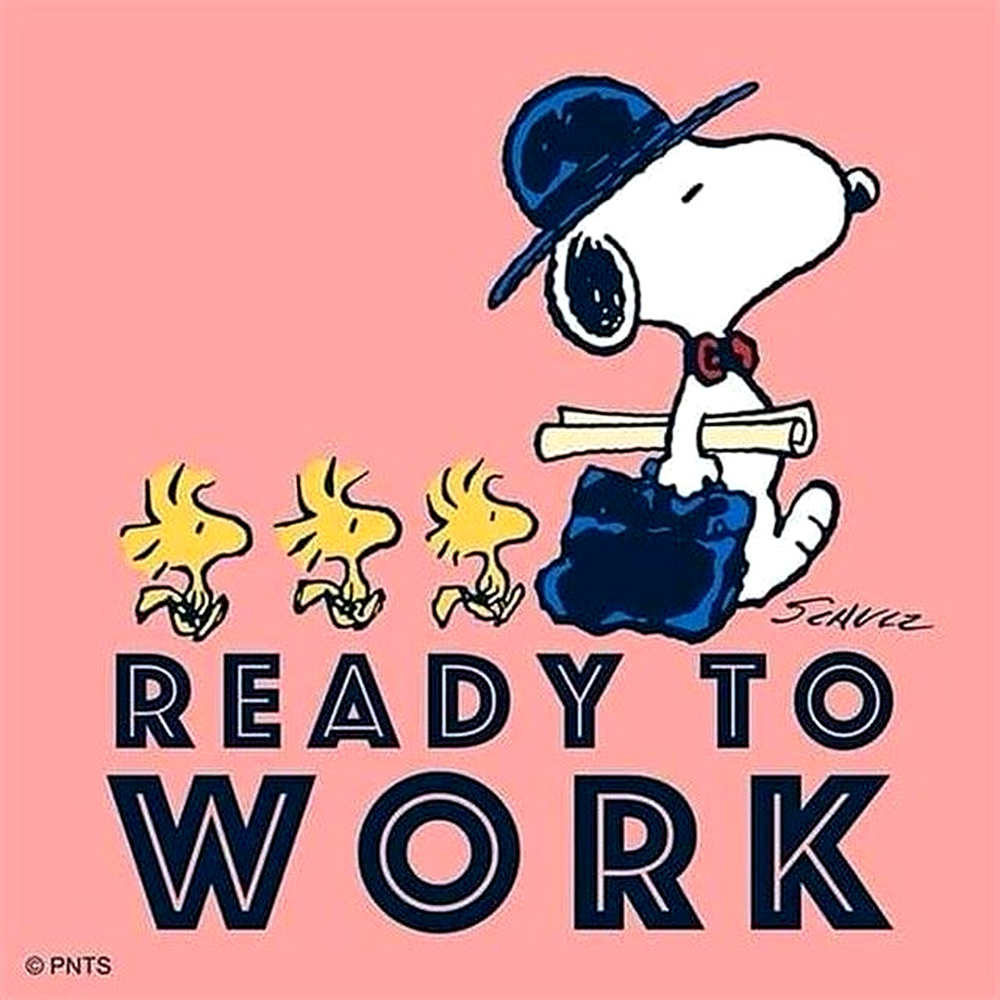
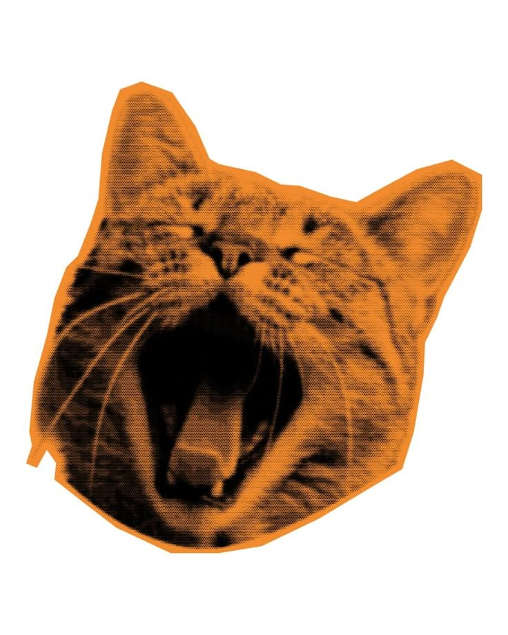
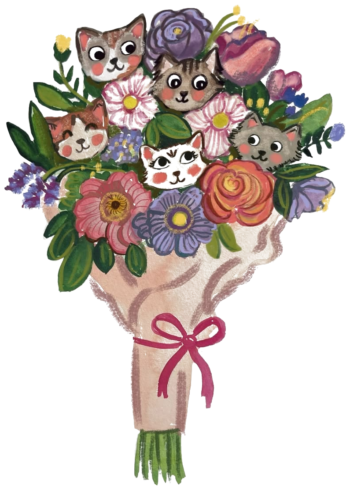
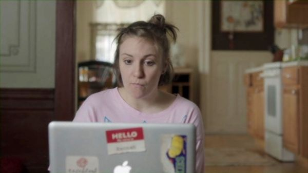
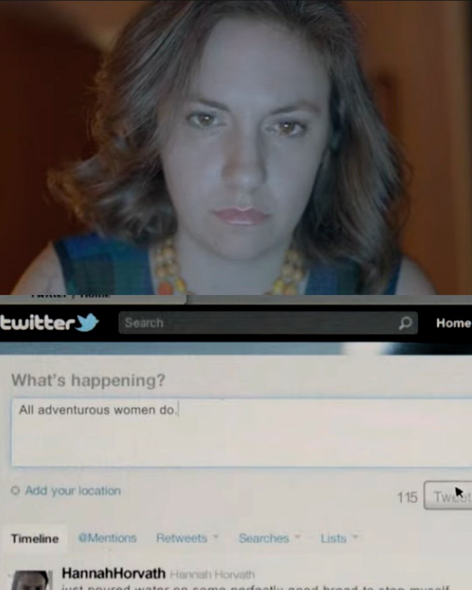

QA · Tech Enthusiast · Project Maker
quality, culture & everything in between.
QA con foco en calidad y experiencia del usuario. Entusiasta de product management y productora de un ciclo de cine. Me muevo bien entre lo técnico y lo humano, pienso en procesos, en audiencias y en cómo mejorar las dos cosas.

Sobre mí
QA con experiencia en proyectos enterprise, con foco en calidad, procesos y experiencia del usuario. Trabajé en RebelMouse testeando el sitio más grande de la empresa, Penske Truck Rental, haciendo QA de features nuevas, redesigns y validación prelaunch.
Fuera de lo tech, produzco Club Classics, un ciclo de cine independiente, y los sábados coordino el aire de un programa de cine en Radio La Tribu, una radio comunitaria. Estudio gestión cultural porque creo que el contexto y las personas son parte del trabajo, en tech y en cualquier otro lado.
años en QA
recomendaciones LinkedIn
dominios · Penske
Actualizado junio 2026
Mi forma de trabajar
Pregunto el por qué antes de testear
El testing sin contexto es disparar al aire. Antes de armar un caso de prueba, entiendo qué flujo protege y qué impacto tiene si falla.
Construyo procesos donde no los había
Entré a RebelMouse sin QA formal y construí el proceso desde cero. Si algo no existe y hace falta, lo creo.
Un bug no reportado no existe
El mejor hallazgo vale poco si no se comunica bien. Cada reporte que hago tiene lo necesario para que desarrollo lo entienda, reproduzca y priorice sin preguntar.
Me muevo entre lo técnico y lo humano
Inspecciono network requests y hablo con clientes enterprise. Los dos lados del problema importan, y entender ambos hace mejor el trabajo.
Proyectos
Cliente enterprise · 5 dominios · 4 años
El proyecto más importante de la empresa. Testing end-to-end de Penske Truck Rental, un cliente enterprise con 5 dominios y código propio integrado. Cubrí features nuevas, redesigns completos y QA prelaunch en cada ciclo de desarrollo.
Detecté un bug crítico en el flujo de reserva — la feature de mayor impacto en el negocio. Analicé los requests de red, identifiqué el endpoint fallando y escalé con contexto de impacto. Resuelto en horas.
2 clientes activos · 2025 — presente
Testing y planificación end-to-end de forma independiente para un cliente ecommerce. Soy responsable del proceso completo, desde definir qué testear hasta reportar resultados.
Ciclo de cine independiente
Productora de un ciclo de cine donde combino lo técnico con lo curatorial, desde la proyección hasta entender qué quiere la audiencia.
Coordinadora de aire · FM La Tribu 88.7 · Sábados
Programa de radio comunitaria dedicado al cine: entrevistas, columnistas, estrenos y especiales. Coordino el aire — tiempos, transiciones y la coordinación del equipo en vivo cada sábado.

Herramientas
Uso actualmente
Postman
Testing de APIs, colecciones y variables de entorno
Jira
Seguimiento de tickets, bugs y sprints
Azure DevOps
Tracking de trabajo y gestión de repositorios
Asana
Gestión de tareas y seguimiento de proyectos
DevTools
Inspección de requests, respuestas HTTP y network
Figma
Comparación de diseños para testing visual
Notion
Documentación de casos de prueba y procesos
HTML
Estructura de páginas web
CSS
Estilos y diseño responsive
JavaScript
Interactividad y lógica del frontend
Aprendiendo
SQL
Consultas para validar datos directo en la base de datos
Playwright
Automatización de testing end-to-end
Claude Code
Desarrollo asistido por IA
Git
Control de versiones y repositorios
Formación
Estudios
Lic. en Gestión del Arte y la Cultura
Cursos y certificaciones
Intereses

Siempre pregunto por qué antes de cómo.
Me gusta entender cómo funcionan las cosas por dentro.
Produzco Club Classics, un ciclo de cine independiente.
Me interesan las películas que incomodan o proponen algo.
El arte como forma de entender el contexto.
Leo ensayo, ficción y cualquier cosa que me haga pensar distinto.
Conocimientos

SELECT * FROM users WHERE email = 'test@test.com';
SELECT users.name, orders.product
FROM users
JOIN orders ON users.id = orders.user_id;
Testimonios
Micaela is an exceptional QA Engineer I've had the pleasure of working with for four years at RebelMouse — an essential partner in delivering high-quality work across multiple clients with complex needs. Beyond her technical skill and her strong sense of how quality supports both users and client goals, she's truly a joy to work with.
Carmen Reategui
Account Project Manager · RebelMouse
She is incredibly detail-oriented: nothing slips past her. Her bug reports were always precise and actionable, and she had a natural ability to catch edge cases before they became real problems. She's proactive by nature — she never waited to be asked, she just saw what needed to be done and did it.
Mauro Frete
Frontend Developer · RebelMouse
What stood out most was her attention to detail and her sense of ownership. She didn't just test for bugs — she thought about the product, the user, and the design as a whole. Her eye for UX issues caught things that most QA professionals would have missed.
Nicolás Peralta
IT Project Manager · Delivery Manager
Micaela es una profesional de excelencia, muy hands-on, tiene una visión de producto tanto para oportunidades de negocio como de métricas de éxito. Su amplia experiencia como QA le da la posibilidad de entender el producto desde lo funcional, con una sobresaliente comunicación con el equipo de ingeniería.
Lucas Della Sala
Tech Lead & Senior Backend Engineer
Mica is not only a great specialist with deep knowledge of software development and QA processes, but also an amazing team player. She has a strong understanding of quality standards, knows how to balance manual and automated testing, and always keeps the bigger product picture in mind.
Anna Maevskaya
QA Automation Engineer · RebelMouse
She is highly detail-oriented, proactive, and always thorough when testing and reporting issues. Her bug reports were consistently clear, actionable, and helpful. Beyond her technical skills, she is great to work with: communicative, reliable, and always focused on finding solutions.
Nadra Naveda Boscán
RebelMouse
Tiene el ojo técnico de una QA experta y la sagazidad de una productora, consciente de que los proyectos se sacan adelante con estrategia y foco. Lo que más destaco es su capacidad para planificar sin perder de vista la narrativa y el impacto en la gente. Testea, investiga, cuestiona y mejora.
Sebastián Leonel Encinas
Head of Strategic Projects & Operations · Bloka
She's incredibly proactive, always looking for new tools and ideas that could improve our work, and a huge help when dealing with complex cases. She's also a very supportive teammate, always willing to help, share knowledge, and step in when needed.
Clara Savi
Project Manager
As the Project Manager, I found her to have an excellent eye for detail. Requirements were always understood quickly, which allowed us to consistently deliver client expectations. In a fast-paced environment, Micaela's work ethic helped us ensure the project was always in tune with the timeline.
Michelle Coetzee
Digital Operations & Projects
She's always willing to help, approachable, and brings a very positive energy to everything she does. You can really count on her to show up for others and contribute in a meaningful way. She's someone who makes teams better just by being part of them.
Milagros Linale
Psicóloga Clínica · Head of HR · Talent Acquisition
Micaela is a very disciplined and committed person. She is a diligent and detail-oriented professional with a strong understanding of quality assurance processes. Very proactive and a quick learner — and most importantly, well-communicated and a great person.
Mariano Laville
QA Analyst · RebelMouse
Contacto
Si querés hablar de trabajo, proyectos o simplemente conectar, escribime.
Micaela Jara
QA Engineer · Tech Enthusiast · Project Maker
